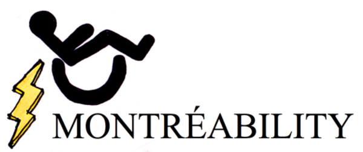

O Noir
1631 Sainte Catherine St.
(514) 937-9727
Mon - Sun: 5:30pm to 11pm
A unique dining experience completely in the dark.
Website
Le Square
162 Prince-Arthur St. East
(514) 439-7755
Mon - Fri: 11:00 am - 11:00 pm
Sat: 5:00 pm - 11:00 pm
Sun: 11:00 am - 11:00 pm
A quaint French bistro, BYOB.
Website
Lola Rosa
4581 Ave. Parc
(514) 843-5652
Mon - Wed: 5:00 pm - 9:30 pm
Thu: 11:30 am - 9:30 pm
Fri - Sat: 11:30 am - 10:00 pm
Sun: 11:30 am - 9:30 pm
A vegetarian and vegan twist on classics.
Website
Misto
929 Ave. Mont-Royal East
(514) 526-5043
Mon - Sun: 5:00pm - 12:00am
A fresh take on Italian cuisine.
Website
Mister Steer
1198 Sainte Catherine West
(514) 866-3233
Sun: 8:00 am - 10:00 pm
Mon-Wed: 9:00 am - 10:00 pm
Thu: 9:00 am - 11:00 pm
Fri-Sat : 8:00 am - 12:00 am
Casual diner in downtown Montreal.
Website
Bistro-bar Balmoral
305 Sainte Catherine St. West
(514) 288-5992
Mon: 11:30 am - 2pm
Tue - Fri: 11:30 am - 2pm, 5pm - 9:30pm Sat: 4:30 pm - 9:30pm
Sun: CLOSE
French inspired cuisine that becomes a jazz venue during Montreal’s Jazz festival.
Website
Rueben’s Deli
1116 Sainte Catherine St. West
(514) 866-1029
Mon - Thu : 6:30am - 12:00am
Fri: 6:30am - 1:30am
Sat: 8:00am - 1:30am
Sun: 8:00am - 12am
Classic deli and steakhouse in Montreal.
Website
Deville Dinerbar
1425 Stanley St.
(514) 281-6556
Mon - Thu: 11:00 am - 11:00 pm
Fri - Sat: 11:00 am - 12:00 am
Sun: 11:00 am - 11:00 pm
Authentic diner with a nostalgic feel.
Website
Brasserie T!
1425 Jeanne Mance St.
(514) 282-0808
Mon - Sun: 11:30 am - 11:30pm
Steps away from the Museum of Contemporary Art, this restaurant serves typical brasserie foods.
Website
Dinette Triple Crown
6704 Clark St.
(514) 272-2617
Mon - Tue: 11:00 am - 9:00 pm
Thu - Sun: 11:00 am - 9:00 pm
Barbecue, soul food in Montreal’s Plateau neighborhood.
Website
Icehouse
51 Roy St. East
(514) 439-6691
Mon: CLOSED
Tue - Thu: 5:00 pm - 11:00 pm
Fri - Sat: 5:00pm - 1:30 am
Sun: 5:00 pm - 11:00 pm
Tex-Mex and seafood tucked away off the bustling St. Laurent Blvd.
Website
Portus Calle
4281 Saint Laurent Blvd.
(514) 849-2070
Mon - Fri: 11:45am - 3:00pm, 6:00pm - 11:00pm
Sat: 6:00pm - 3:00am
Sun: CLOSED
Mediterranean restaurant in Montreal’s Portuguese neighborhood.
Website
Grinder
1708 Notre-Dame St. West
(514) 439-1130
Mon - Wed: 12:00pm - 3:00pm, 5:30pm - 11:00pm
Thu - Fri: 12:00pm - 3:00pm, 5:30pm - 12:00am
Sat: 5:30pm - 12:00am
Sun: CLOSED
Restaurant specializing in meat and wine, with a vintage yet modern feel.
Website
Wood35
3500 Boulevard St Laurent
(514) 844-0027
Sun - Mon: CLOSED
Tue - Sat: 6:00pm - 3:00am
This restaurant, bar and club serves grill and fusion Italian cuisine.
Website